Framtidens musikspelare
Hur vill du lyssna på musik i framtiden? Förr i tiden hade vi grammofoner, senare cd-spelare och mp3-spelare, och nu streamar många musik direkt från nätet vilket gör att du kan lyssna lite varstans.
Musikspelarna blir också smartare och kan föreslå musik som de tror att du kommer att tycka om. Vad vill du ha för pryl eller program som spelar din favoritmusik och hur vill du att den ska fungera?
I den här uppgiften kommer vi att göra ett par glasögon som känner av hur personen som bär dem mår – om den är glad eller arg – och spela musik som passar till humöret! Vi tänker oss att våra musikspelande glasögon har en sensor som kan läsa av humöret, kanske genom personens hjärnvågor. Du kan så klart göra en musikspelare som ser ut som något helt annat och som känner av något annat!
Ett exempel på projektet hittar du här: https://scratch.mit.edu/projects/129448994/
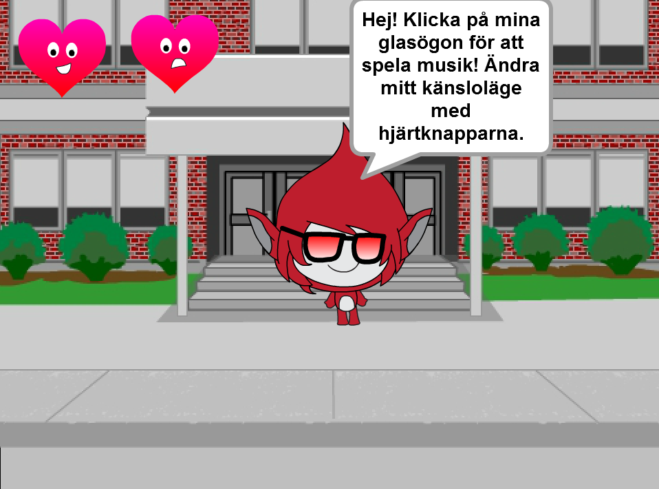
1: Välj bakgrund och sprajt
Först behöver du lägga in en bakgrund.
För att ändra bakgrunden trycker du först på SCEN längst till vänster och sedan på fliken BAKGRUNDER högst upp i mitten.
Tryck sedan på knappen för välj bakgrund från biblioteket.

Välj en bakgrund, i det här exemplet väljer vi den som heter School2. Klicka OK.
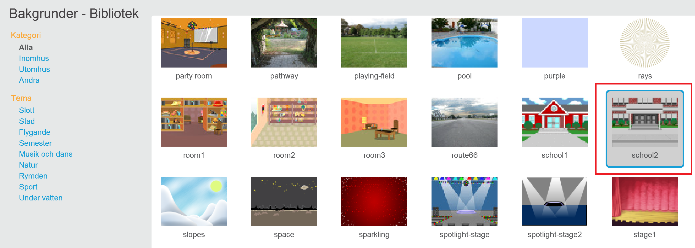
Tryck på saxen (högt uppe i mitten) och sedan på katt-sprajten så försvinner den.
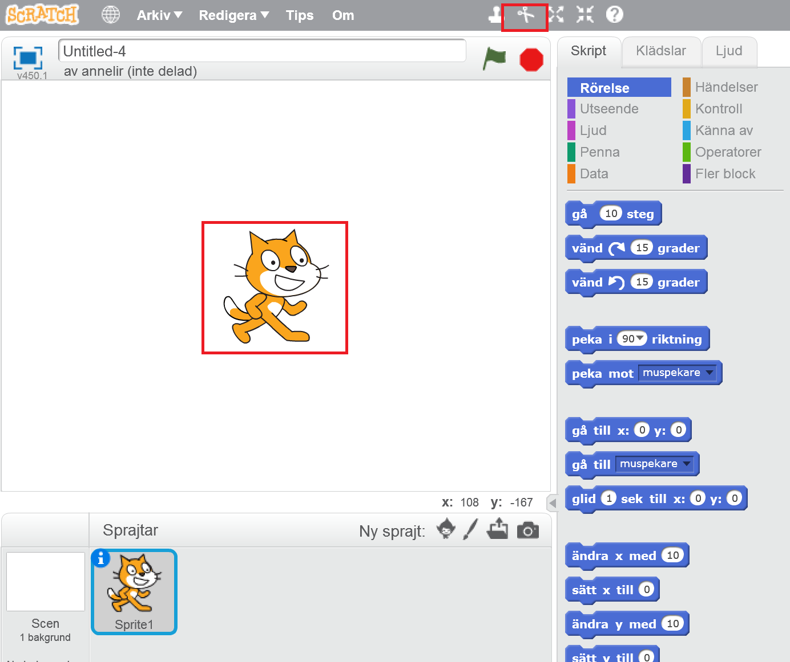
Nu vill du lägga till en ny sprajt. Tryck på knappen för NY SPRAJT. I det här exemplet väljer vi sprajten som heter Giga. Klicka OK.

Tips: Sprajten Giga har flera utseenden, som du ser om du trycker på fliken för KLÄDSLAR. Vi kommer att använda tre klädslar: en där Giga ler, en där Giga skrattar och en där Giga är arg. Om du har valt en annan sprajt, se till så att det är en sprajt med olika klädslar för de utseenden som du behöver!
2: Knappar som ändrar humör
Nu ska vi lägga in skript så att Giga ändrar humör när man klickar på två knappar. Giga ska kunna bli antingen glad eller arg. Vi behöver lägga in två knappar som gör så att d kan styra Gigas humör. I vårt exempel är knapparna två sprajter som ser ut som hjärtan med ansikten.
Tryck på knappen för NY SPRAJT. Välj sprajten som heter Heart Face. Klicka OK.
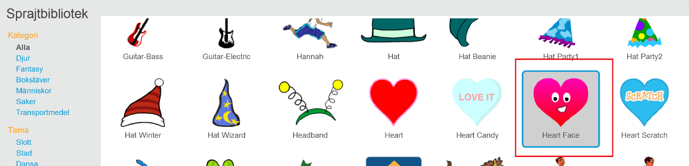
Vi behöver två sprajter, den ena ska vara glad och den andra ska vara arg. Kopiera sprajten "Heart Face” genom att först klicka på stämpeln för att kopiera, längst upp i den grå bannern, och sedan klicka på sprajten. Då kommer du få en till likadan sprajt.
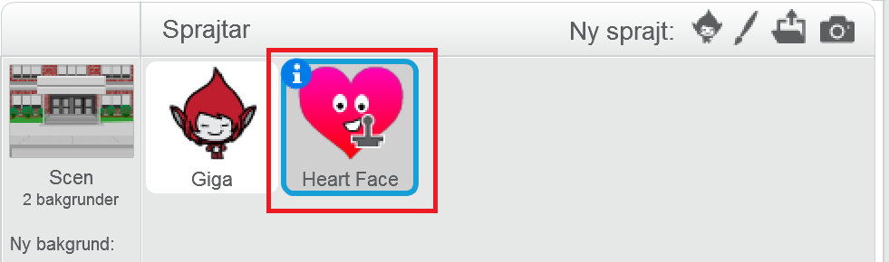
Flytta båda sprajtar längst upp till vänster på scenen genom att dra och släppa dem där.
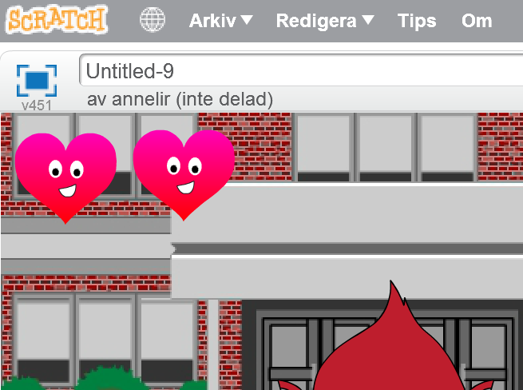
Nu ska vi ändra humör på den andra sprajten, den knappen som gör att Gigi ändrar humör till arg. Klicka på sprajten HeartFace2. Klicka på fliken KLÄDSLAR.
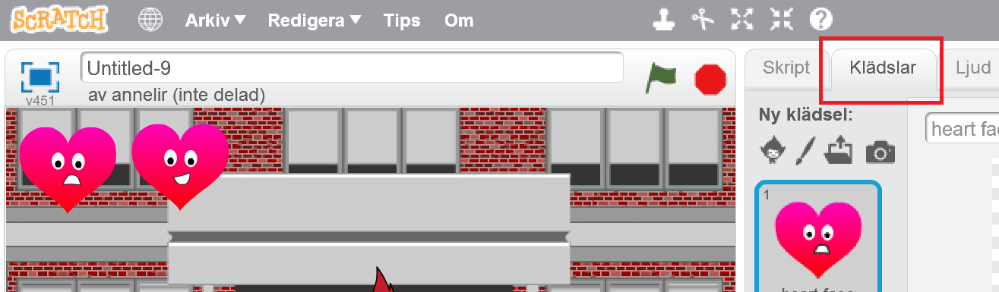
Klicka på hjärtats mun så att den blir markerad. Rotera munnen genom att klicka på den lilla cirkeln i markeringen, vrid den upp och ner så att hjärtat ser argt ut. Eller rita en egen arg mun om du vill!
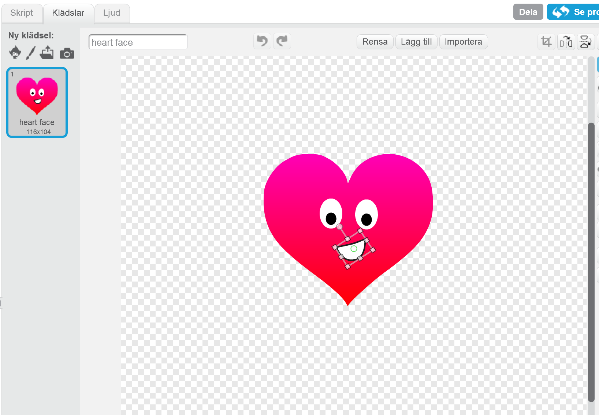
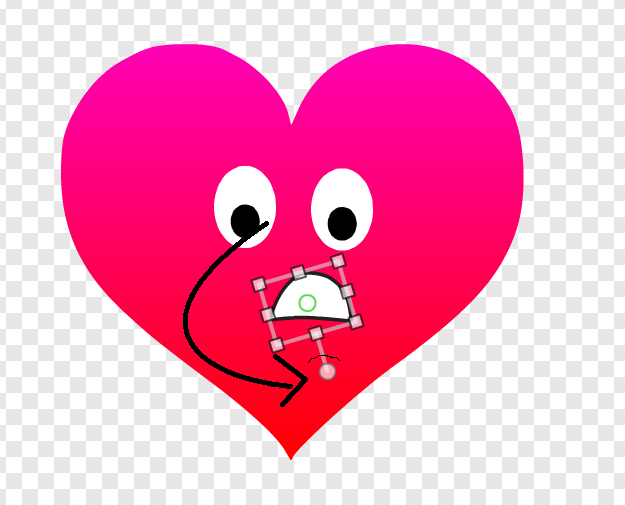
Klicka på fliken för SKRIPT för att komma tillbaka till kodarläge. Nu ska vi koda knapparna!
Nu ska vi göra en VARIABEL som har koll på om Giga känner sig glad eller arg. Om Giga är glad ska variabeln ha värdet 1. Om Giga känner sig arg ska variabeln ha värdet 0. Dra in block från DATA: Skapa ny variabel. Döp variabeln till glad.
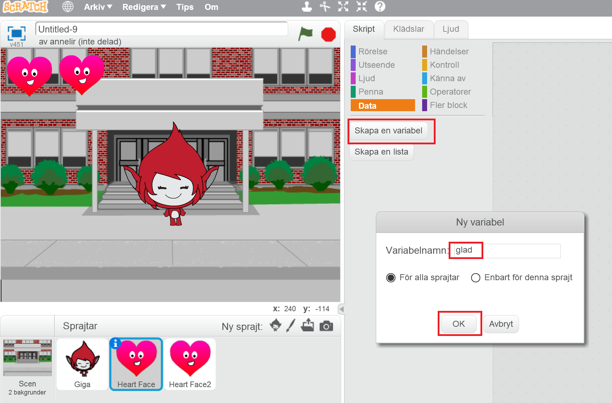
Klicka på Heart Face, det glada hjärtat, och klicka på fliken för SKRIPT. Dra in skript för HÄNDELSER: När denna sprajt klickas på.
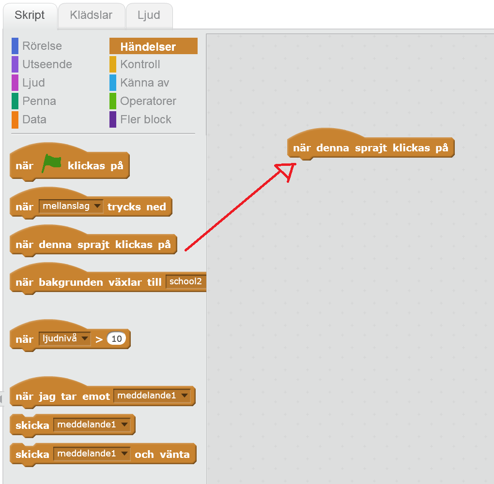
Dra in block från DATA: sätt glad till 0. Koppla ihop med det andra skriptet. Ändra 0 till 1 genom att klicka och skriva i den vita rutan. När du klickar på sprajten ska variabeln ändras till 1.
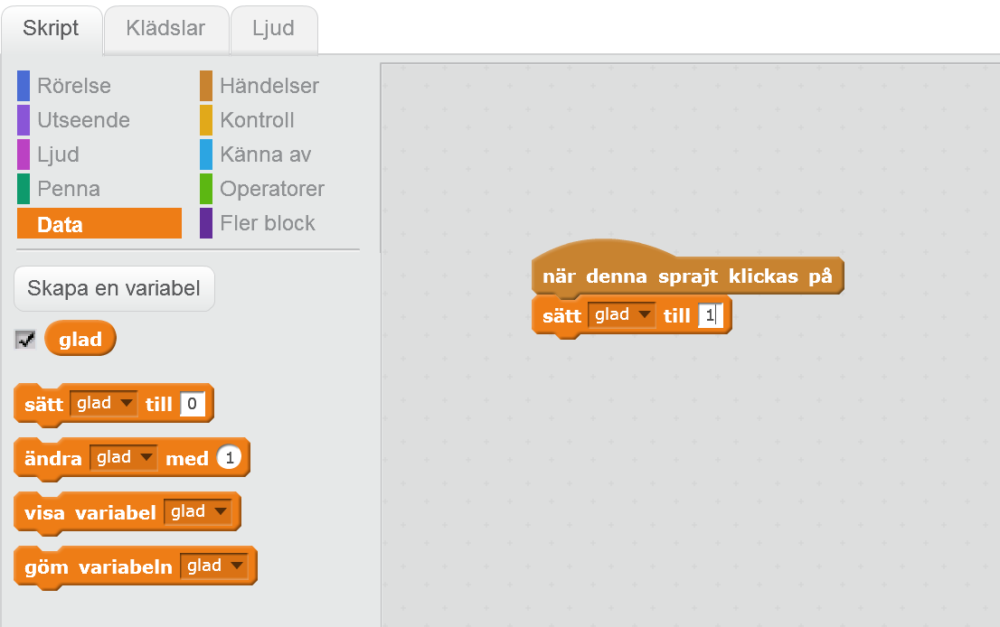
Hur ska Giga veta om att den ska bli glad eller arg? Genom att få ett meddelande! Knappen ska skicka ett meddelande till Giga.
Dra in skript för HÄNDELSER: skicka meddelande1. Klicka på lilla triangeln och ge meddelandet ett namn. Döp meddelandet till känsla. Klicka OK.
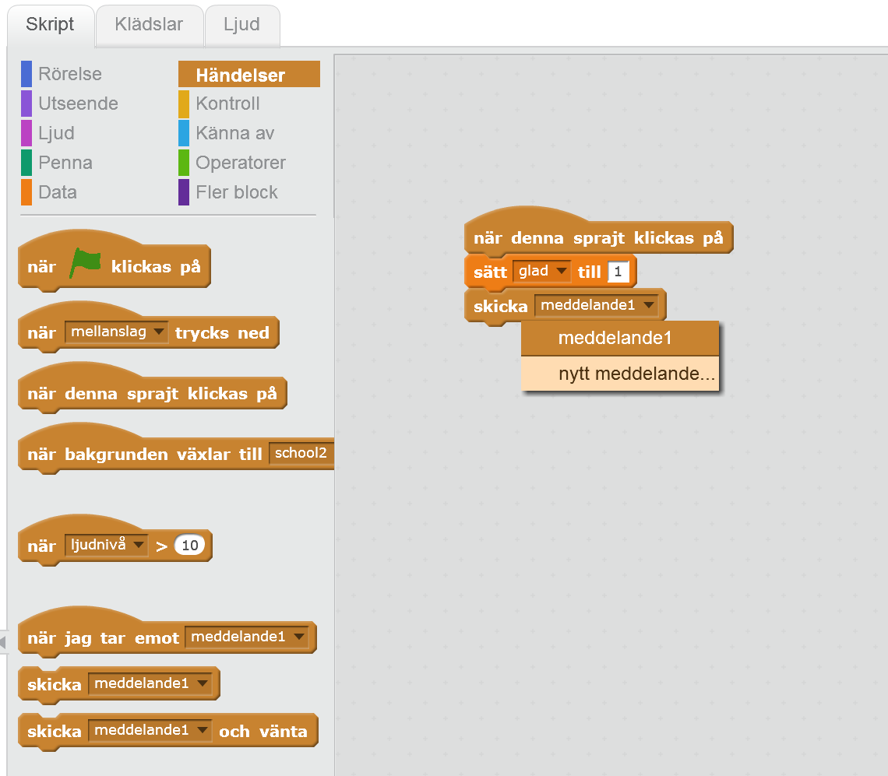
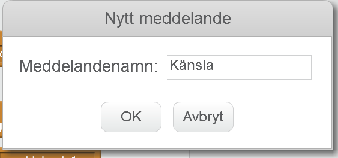
Nu ska vi göra samma sak för andra knappen som ser arg ut! Klicka på HeartFace2, sprajten som ser arg ut, och gå in på SKRIPT. Lägg in samma skript för sprajten förutom att du sätter variabeln glad till 0.
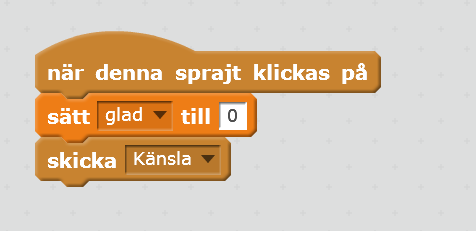
Testa ditt projekt! Klicka på START. Ändras variabeln när du klickar på knapparna? Du måste ha variabeln synlig på scenen för att kunna se det.
3: Giga ändrar humör
Nu ska Gigas humör ändras beroende på vilken knapp du trycker på. Giga ska ta emot meddelanden från knapparna och behöver hela tiden KÄNNA AV om den är glad eller arg, om variabeln är 1 eller 0. Till det använder vi en LOOP.
Klicka på sprajten för Giga. Lägg in block från HÄNDELSER: När jag tar emot känsla.
Därefter behövs en loop som ska känna av om variabeln förändras under hela tiden som skriptet körs. Dra in block för KONTROLL: för alltid.
Lägg in block för KONTROLL: Om __ då annars. Detta skript ska kolla om variabeln är 0 eller 1.
Dra in block för OPERATORER, välj den med lika med-tecken =. I det skriptet, lägg in skript för DATA: variabeln glad. Skriv in nummer 1.
Giga ska byta klädsel för att bli glad eller arg beroende på om variabeln är 0 eller 1. Lägg in ett block för UTSEENDE: byt klädsel till giga-b om variabeln är 1. Annars blocket UTSEENDE: byt klädsel till giga-d. Giga-b är klädsel för när Giga ser glad ut, Giga-d är klädsel som göra att Giga ser arg ut!
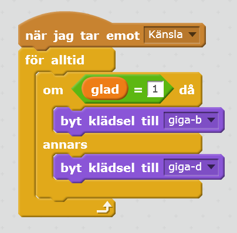
Testa ditt projekt! Klicka på START. Vad händer när du klickar på hjärtknapparna? Blir Giga glad eller arg? Titta på variabeln glad längst upp i vänstra hörnet, visst ändras den mellan 1 och 0 beroende på om Giga är glad eller arg? Det kallas för en BOOLESK VARIABEL som kan vara antingen 1 eller 0, sant eller falskt. Precis det språk som datorer förstår, ström på eller av!
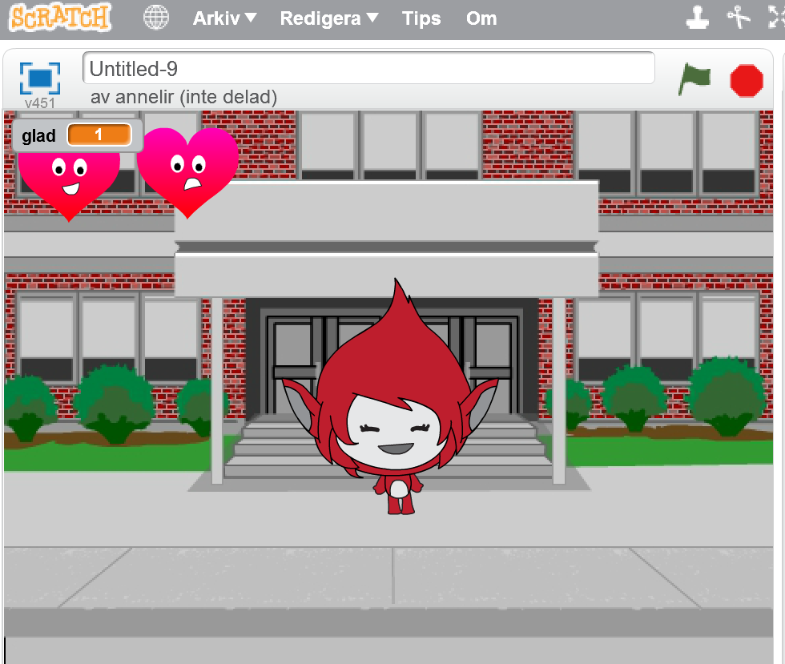
4: Glasögon som spelar musik
Nu ska Giga få ett par musikspelande glasögon som känner av om Giga är glad eller arg. Du kan tänka att glasögonen har en sensor som kan läsa av känslor, kanske genom Gigas hjärnvågor? Beroende på humöret spelar glasögonen olika musik!
Lägg in en ny sprajt. Tryck på knappen för NY SPRAJT. Välj sprajten som heter Glasses. Klicka OK.
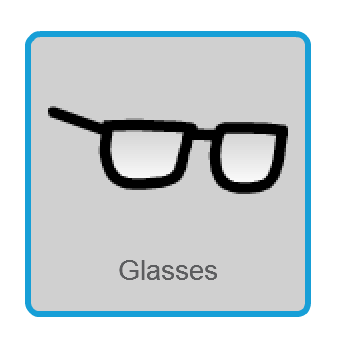
Flytta på glasögonen så att de sitter på Gigas huvud. Ser glasögonen för små ut? Klicka på förstora-ikonen längst upp i den grå bannern. Klicka sedan på glasögon-sprajten flera gånger för att få lagom storlek.
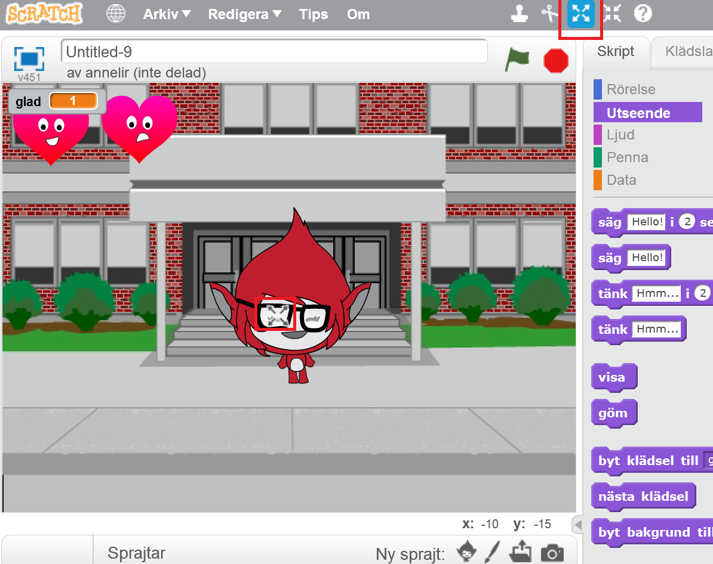
Nu ska glasögonen känna av vilket humör Giga är på! Lägg in skript för HÄNDELSER: när jag tar emot känsla.
Fortsätt med att kontrollera om Giga är glad eller arg. Lägg in block KONTROLL: Om __ då ... annars. I skriptet, lägg in OPERATOR: = och sedan lägg in block för DATA: variabeln glad. Skriv in = 1.
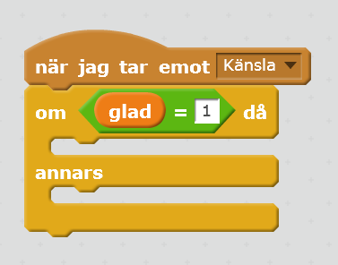
Nu ska vi hitta ljud som glasögonen ska spela! Klicka på LJUD-fliken. Välj lägg in nytt ljud från bibliotek.
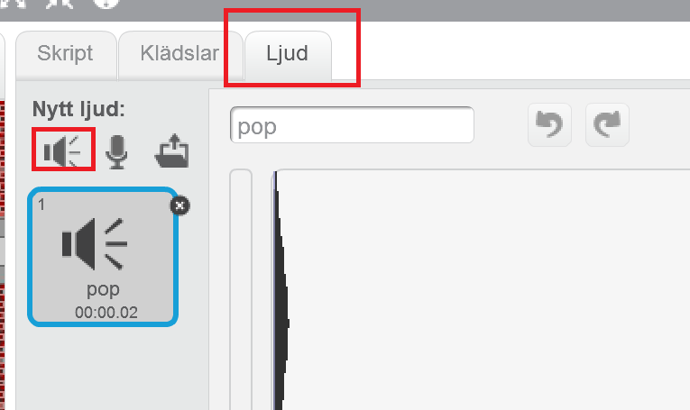
Hitta ett ljud som glasögonen kan spela när Giga är glad. I det här exemplet har vi valt dance magic. Lägg in ljudet genom att klicka på OK.
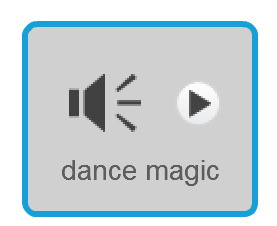
Hitta ett ljud som ska spelas när Giga är arg. Vi har valt ljudet jungle. Lägg in genom att klicka på OK.
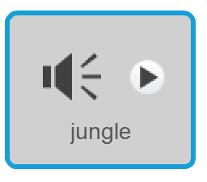
Klicka på SKRIPT-fliken igen. Under Om __ då ..., lägg in skript för LJUD: spela __ tills färdigt. Ändra ljud genom att klicka på pilen och hitta dance magic i listan.
Under annars, lägg in ett till skript för LJUD: spela __ tills färdigt. Ändra ljud genom att klicka på pilen och hitta jungle.
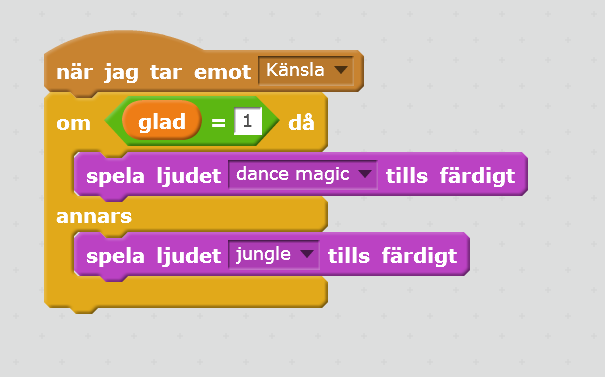
Testa ditt projekt! Klicka på START. Vad händer om du klickar på glada knappen? Spelas musiken? Vad händer om du klickar på arga knappen? Ändrar Giga min? Spelas annan musik? Bra!
Musiken ska fortsätta spela hela tiden. Med blocket för alltid fortsätter programmet att loopa musiken. Lägg in från KONTROLL: för alltid, direkt efter när jag tar emot känsla.
Lägg sedan in skript för att stoppa musiken innan nästa låt börjar köras, så att du är säker på att bara en låt spelas. Lägg in block för LJUD: stoppa alla ljud under om och annars.
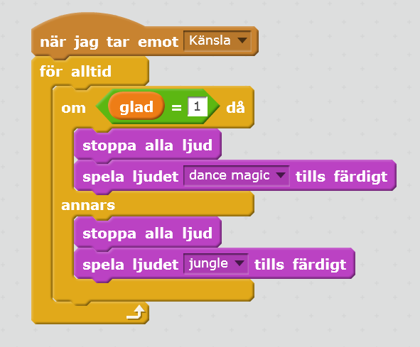
Testa ditt projekt! Klicka på START. Spelas ljudet om och om igen nu? Bra! I nästa steg ska vi se till att du kan stoppa och starta musiken.
5: Styr musiken med glasögonen
I denna uppgift lägger vi in skript så att du kan spela och stoppa musiken genom att klicka på dem. Glasögonen ska ändra färg beroende på om spela eller stopp är klickad på, så att du kan se om musikspelaren är igång!
Klicka på fliken KLÄDSEL. Kopiera glasögonens klädsel genom att klicka på stämpel i den grå bannern och sedan på glasögonen.

Klicka på den första klädseln som heter glasses. Klicka på fyll i (färgburken) i högermenyn. Välj den röda färgen i paletten och sedan den tonade färgen längst ner till vänster. Klicka sedan i glaset i glasögonen för att fylla i färgen. Gör likadant på båda sidor!
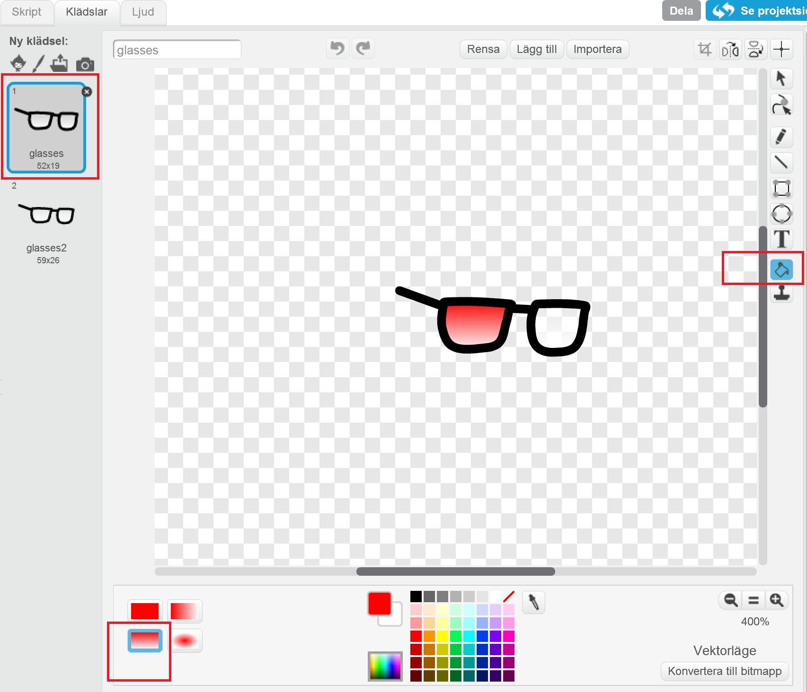
Klicka nu på den andra klädseln glasses2. Gör samma sak som ovan fast med grön färg.
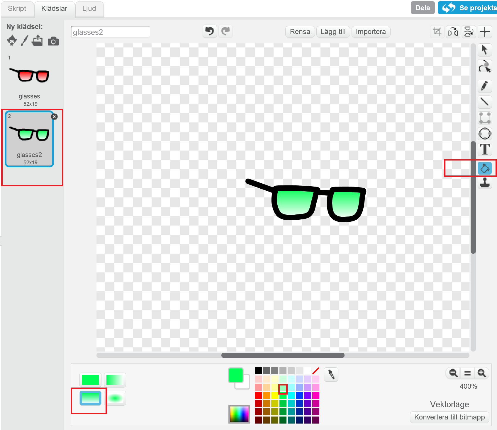
Nu ska vi göra ett skript för att glasögonen ska spela eller stoppa musik och byta färg, när du trycker med muspekaren på glasögonen!
För att kunna göra det måste glasögonen kolla vilken klädsel den har, om glasögonen är gröna så ska det betyda att glasögonen spelar och är de röda ska det betyda att glasögonen har stoppat musiken. Här behöver du använda klädselnummer för att se om det är den första eller andra klädseln som är på.
Gå tillbaka till SKRIPT-fliken. Lägg in block för HÄNDELSER: när denna sprajt klickas på.
Lägg in block för Om __ då ... och efter om lägger du till block OPERATOR: = och UTSEENDE: klädselnummer till vänster om likamedtecknet. Skriv in 1 för den första klädseln, glasögonen med röda glas.
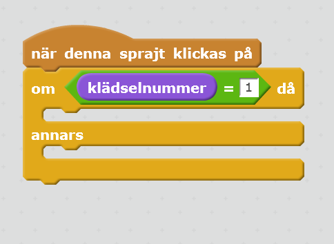
Nu ska vi lägga till skript för när musiken ska spelas eller stoppas. Här använder vi ljudets volym och sätter den till 100% om på, 0% om av. Ta block för LJUD: sätt volym till 100% och LJUD: sätt volym på 0%. Du behöver själv skriva in värdet på volymen i den vita rutan.
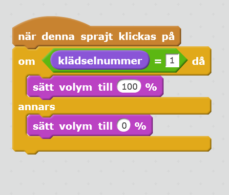
Glasögonen ska byta klädsel också! Lägg in UTSEENDE: byt klädsel till glasses och UTSEENDE: byt klädsel till glasses 2.
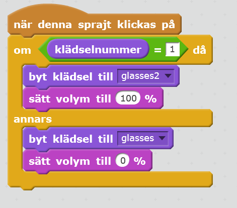
Tips: Tänk på att glasögonen ska bli gröna när volymen är på 100% och röda när volymen är på 0%. Du vill kunna starta musiken när glasögonen är röda, och stoppa musiken när glasögonen är gröna!
Nu vill vi att glasögonen ska vara avstängda när programmet startar. Detta kallas för att initiera programmet, du gör ett INIT-SKRIPT som berättar för datorn hur programmet ska starta.
Lägg till HÄNDELSER: när grön flagga klickas på. Under det fäster du LJUD: stoppa alla ljud och LJUD:sätt volym till 0% och UTSEENDE: byt klädsel till glasses.
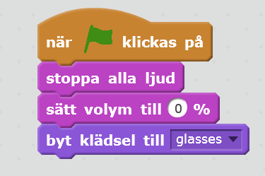
Såhär ska alla skript för glasögonen se ut:
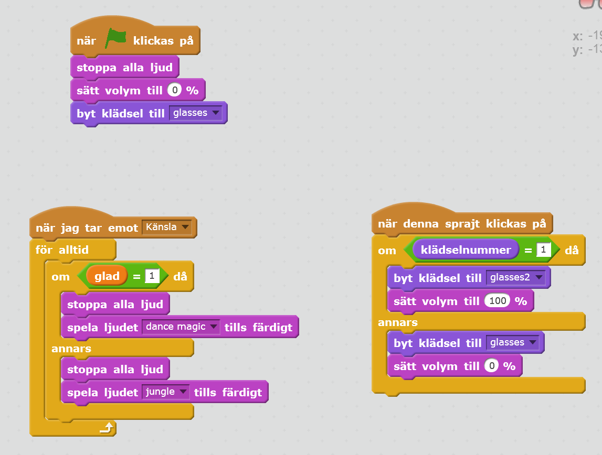
Testa ditt projekt! Klicka på START. Kan du starta och stoppa musiken genom att trycka på glasögonen? Ändrar de färg så att de är gröna när musiken är på och röda när musiken är av?
6: Giga förklarar hur du gör
I det sista uppgiften lägger vi in skript för att Giga ska hälsa när du trycker på START-flaggan och förklara hur glasögonen funderar. Giga ska också ha ett INIT-SKRIPT som säger att hon varken ska skratta eller se arg ut när programmet börjar.
Lägg in skript: HÄNDELSER: när flagga klickas på. Här lägger du till UTSEENDE: byt klädsel till giga-a.
Lägg in skript för UTSEENDE: säg ... i 5 sekunder. Skriv genom att klicka i det vita fältet, till exempel: ”Hej! Klicka på mina glasögon för att spela musik! Ändra mitt känsloläge med hjärtknapparna.”
Välj hur lång tid Giga ska säga sin mening. Testa gärna och se hur lång tid du behöver för att läsa pratbubblan!
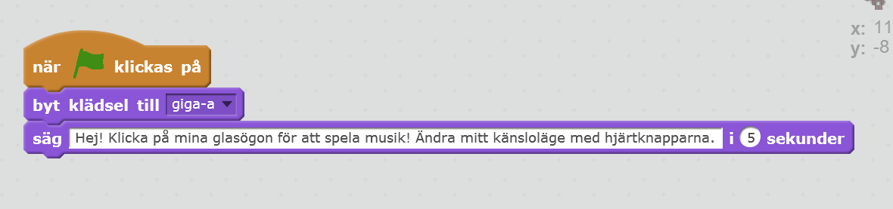
Testa ditt projekt! Tryck på START. Hinner du läsa Gigas pratbubbla? Fungerar de musikspelande glasögonen som de ska?
Färdig!
Grattis, nu har du gjort klart uppgiften.
Glöm inte att spara ditt projekt! Döp det gärna till uppgiftens namn så att du enkelt kan hitta den igen.
Testa ditt projekt
Visa gärna någon det som du har gjort och låt dem testa. Tryck på DELA för att andra ska kunna hitta spelet på Scratch. Gå ut till projektsidan och låt någon annan testa spelet!
Utmaning 1: Egen musik
Om du vill kan byta ut musiken till egen musik. Under LJUD-fliken kan du själv spela in musik med Spela in ljud eller importera ljudfiler från din dator med Ladda upp ljud från fil.
Om du vill programmera egen musik kan du till exempel använda programmet Sonic Pi! Det finns uppgifter till Sonic Pi här.
Utmaning 2: Fler känslor
Kan du lägga till fler känslolägen för Giga? Här kan du själv ändra Gigas klädslar, så att du får olika för ledsen, trött, hungrig och så vidare. Lägg till flera hjärtknappar som visar vilket humör det gäller. Kopiera koden som du redan har gjort och ändra så att flera olika musikstycken kan spelas!
Utmaning 3: Du själv i framtiden
Om du vill att det ska vara du själv som spelar musik i framtiden, kan du byta ut Giga mot en bild på dig själv. För att göra det här exemplet med olika humör behöver du ta flera likadana bilder på dig där du gör olika miner för de humör som behövs.
Eller så använder du en bild men redigerar din mun i Scratch. Lite klurigt men prova dig fram!
Ladda upp bilderna till datorn.
Gå in på Giga KLÄDSLAR och välj Ladda upp klädsel från fil. Ta in alla dina bilder och sudda bort bakgrunden från dem. Döp gärna bilderna med ditt namn och humör, till exempel ”Anneli glad”.
Se till så att alla bilder på dig har samma centerpunkt, med Sätt klädselns centrum. Annars kan det se ut som att du hoppar omkring på scenen.
Ändra i skripten för sprajten så att det är de nya klädslarna med dina bilder som visas istället för Giga.